一张图带你读懂西方哲学史
西方哲学史 · 极简脉络图
完美版
作者丨书杰
第1季：从古希腊到黑格尔
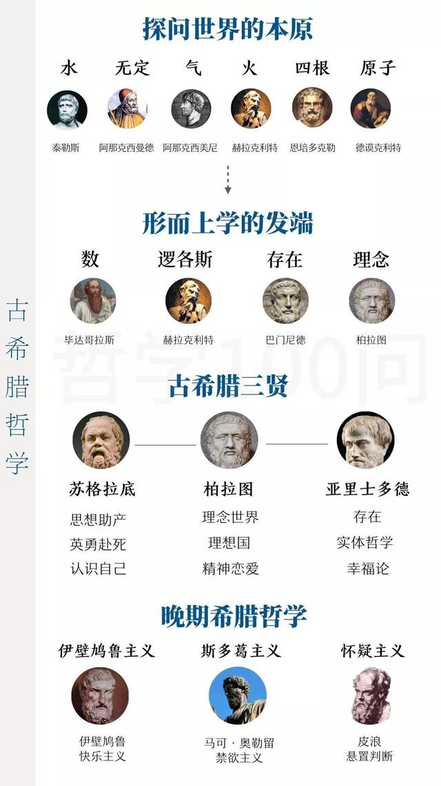
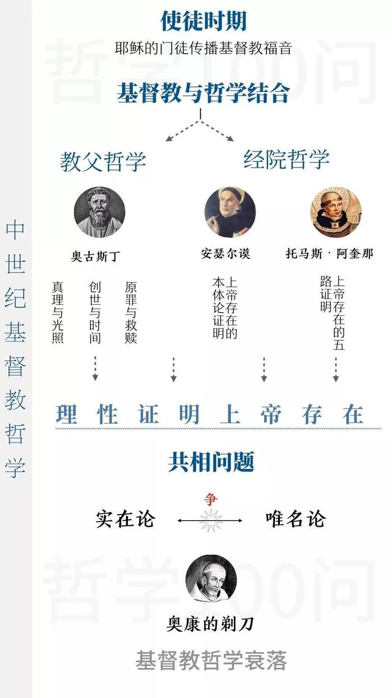
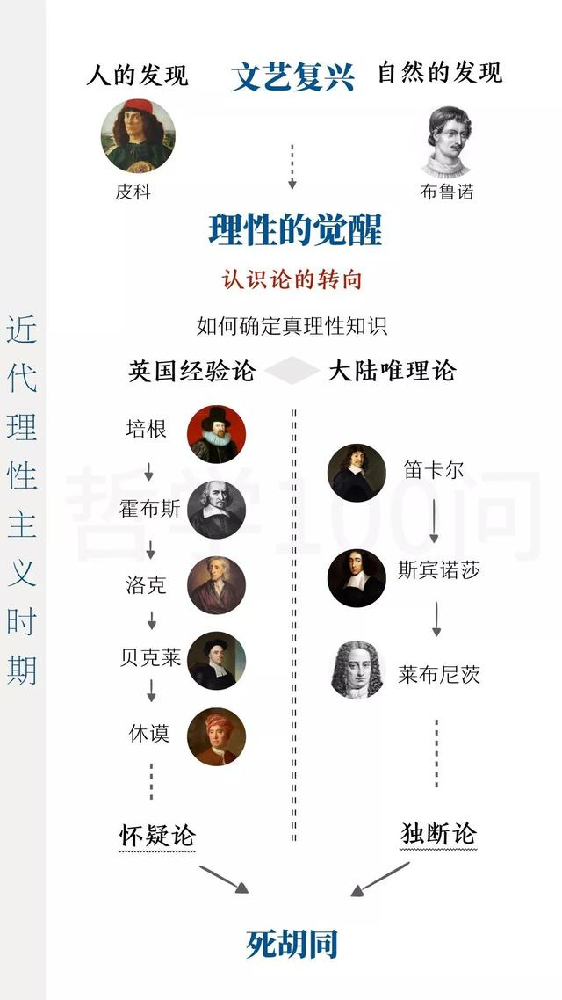
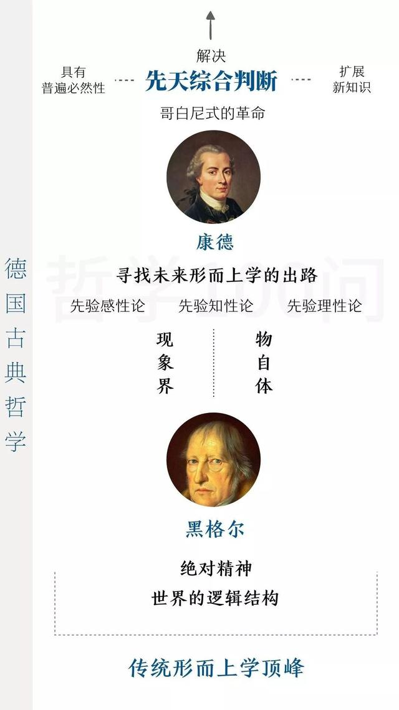
第2季：现代西方哲学
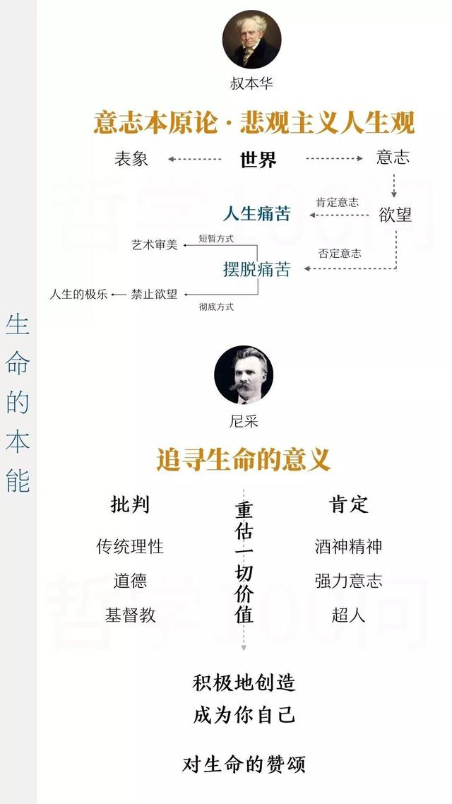
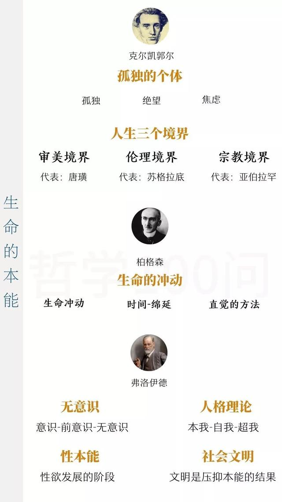
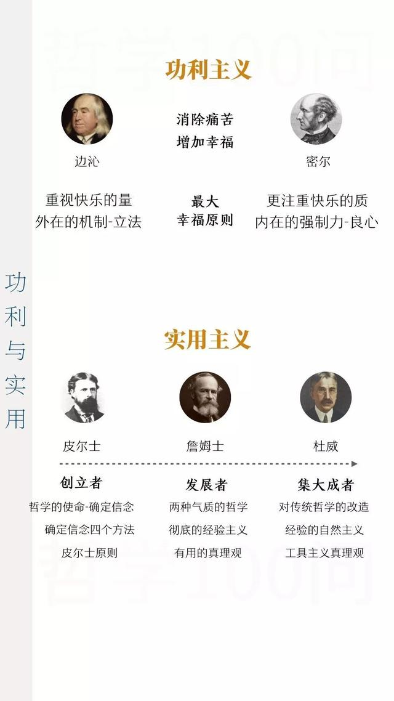
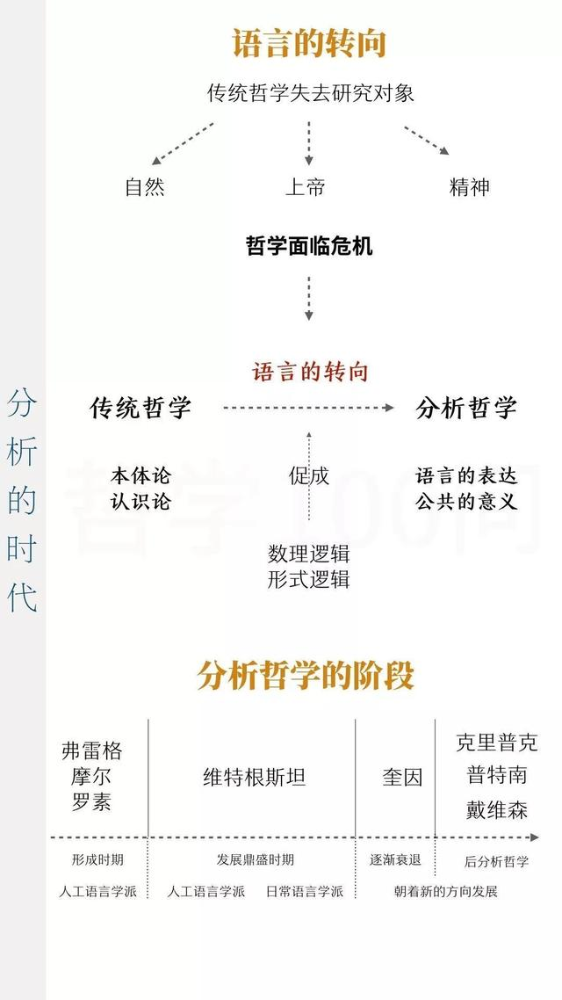

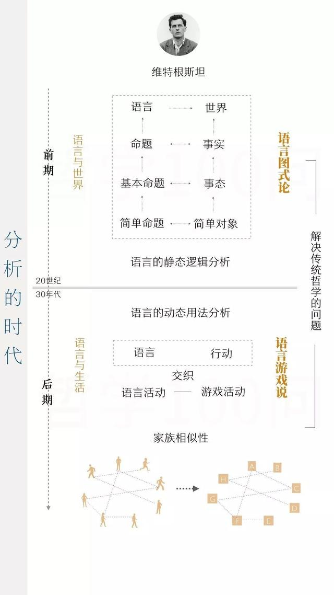
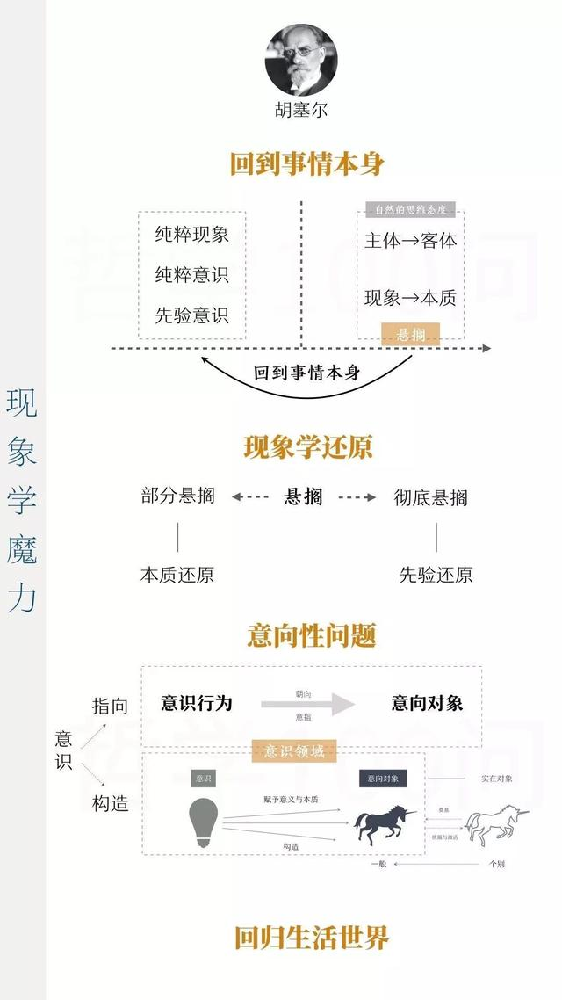
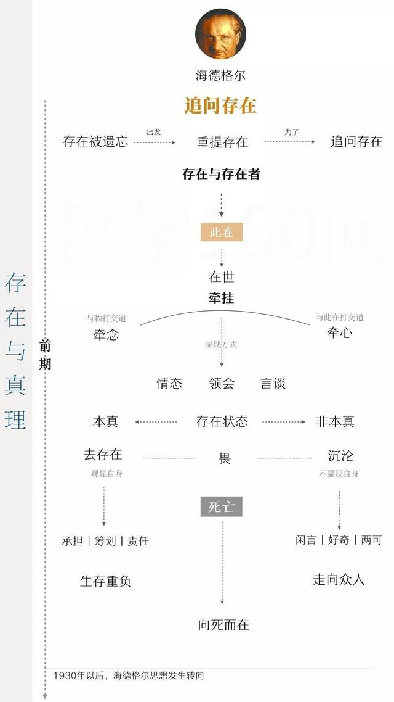
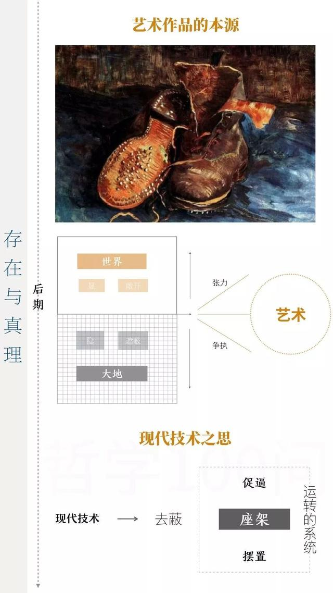
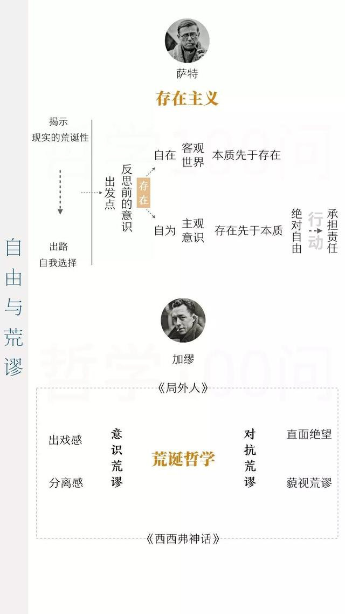
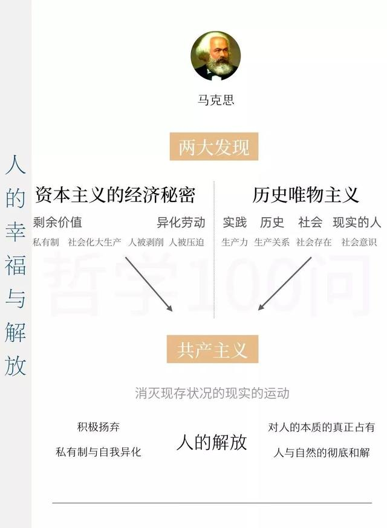
以上逻辑图内容来自《哲学100问》
《哲学100问》新书发布
《哲学100问：人，诗意地栖居》
书杰 著
华文出版社
2019年10月8日
《哲学100问》第2季图书出版
作者简介
书杰用近乎诗意的语言为你为你娓娓道来，你就像读一首诗一样读哲学，带你感受开放、包容与多元的西方哲学的魅力，通达“诗意栖居”的人生境界。
《哲学100问》两季新书概览
《哲学100问》是一部适合普通大众入门的西方哲学史读物。
第1季：为你系统阐述从古希腊到黑格尔阶段的哲学史发展进程，涉及苏格拉底、柏拉图、亚里士多德、笛卡尔、休谟、卢梭、康德、黑格尔等38位哲学家的思想精髓，为你梳理古希腊哲学、基督教哲学、近代理性主义、法国启蒙哲学和德国古典哲学等哲学流派的核心逻辑。
第2季：为你阐述黑格尔之后的现代哲学发展进程，涉及叔本华、尼采、罗素、维特根斯坦、胡塞尔、海德格尔、萨特、加缪等18位现代哲学家的核心思想，为你梳理非理性主义、功利主义、实用主义、分析哲学、现象学、存在主义以及马克思学说等哲学流派的核心逻辑。
图书配置100张双色逻辑思维导图，为你清晰梳理逻辑脉络。